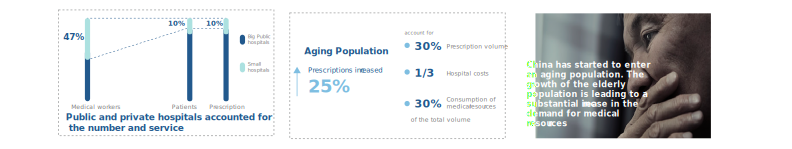
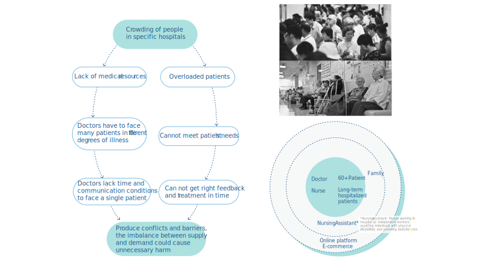
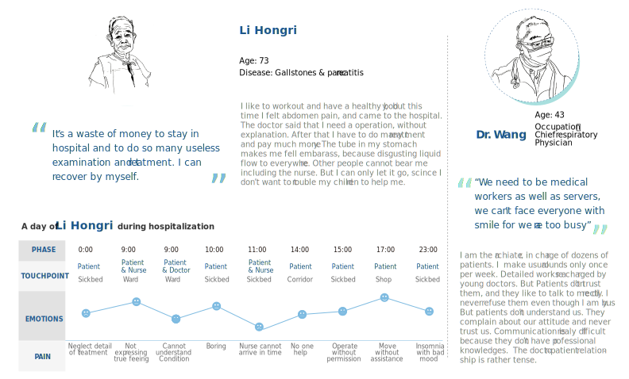
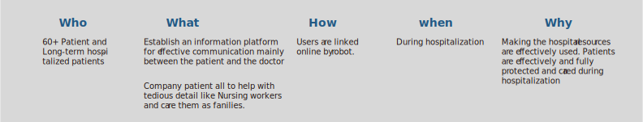
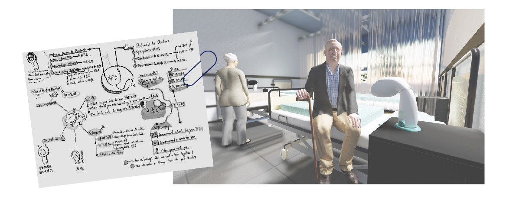
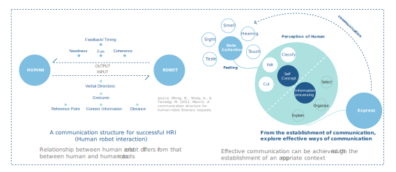
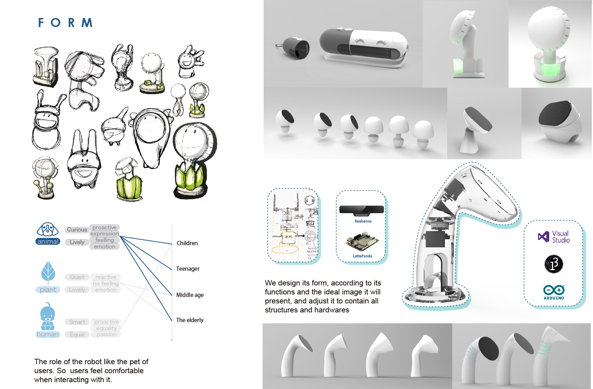
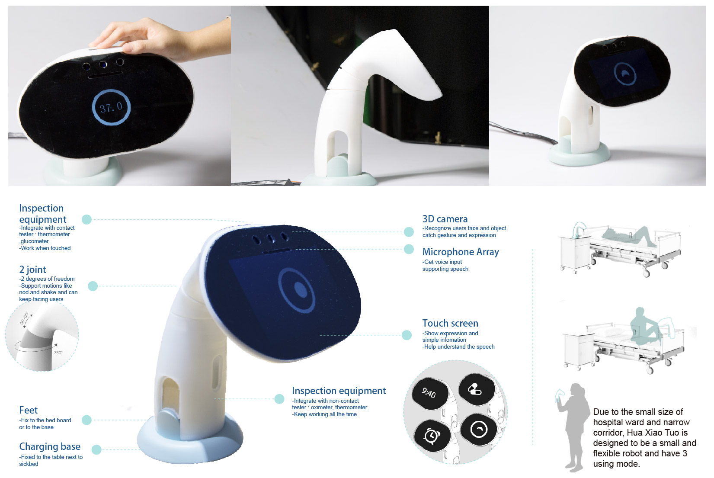
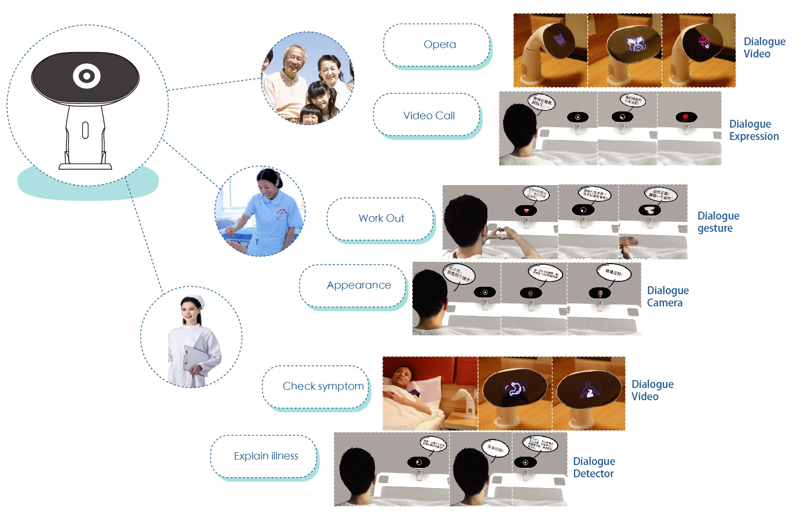
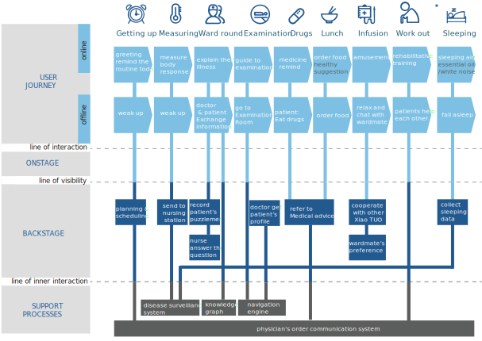

Hua Xiao Tuo
Project Type Team Project
Research Methods Field works, Interview, Contexual Inquiry, persona, User journey map, Usability Testing
Tools Intel Realsense, Visual Studio, Arduino, Rhino, Keyshot, 3D print
Elderly care has become a thorny issue, especially in the ward, professional care workers are in severe shortage. In this situation, the healthcare robot came into being. A healthcare robot can be accompanied by an elderly person who is disable to take care of themselves and make the life in the ward no longer depressing.
Background research
 Findings from this phase
In China, the hospital service is not stratified and Everyone tend to choose large, guaran- teed public hospitals for medical treatment, resulting in the crowding of patients. Medical resources are limited in hospital and the medical level is not balanced. It causes the issue that patients’ medical difficulties can not be effectively solved.
Further research
We came to Xinhua Hospital and observed the general situation in hospital and the living condition of the patients. Meanwhile, we visited 15 people, having deep conversation with them. We got aware of people’s daily life during hospital stay, the demands of people in different positions and the estrangement during communication.

Analysis
Patients have both basic needs and emotional needs, and most of those needs should be met with others’ partici- pation. However, because of the limited resources and absence of proper tools, many barriers have appeared. These are the places where we can work.

Persona

Problem define

Introducing of robot
- Robot is directly connected with online data, so it can bridge the infomation gap.
- Robot is always online, so it can care when human is absent.
- Robot have a natural interaction with human, so it can support emotional fuction.
 
Form development
We design its form, according to its functions and the ideal image it will present, and adjust it to contain all structures and hardwares

Final works
Hua Xiao Tuo is a small healthcare robot in the ward. She can serve as a nurse, health care workers and family role, responsible for information communication, life care and emotional nursing. She can do the health examination and patiently explained the symp- toms to the patient. More important- ly, she can make the life in the ward no longer boring.

Functions & feartures

Interaction Design
Journey map
